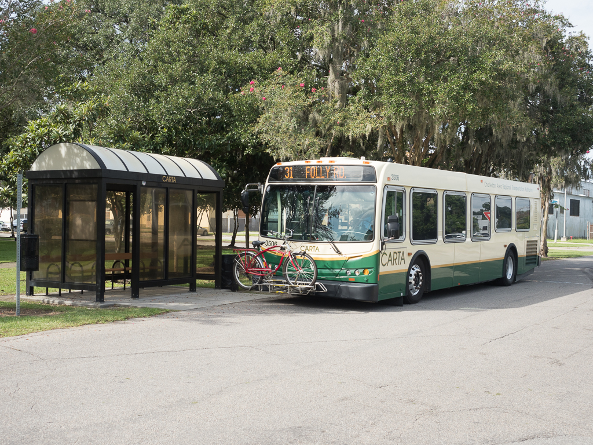
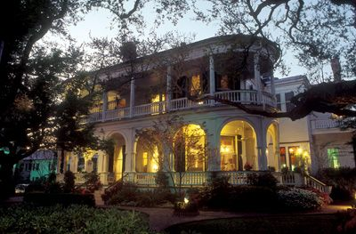

Plan Your Visit To Charleston
Charleston hosts Charleston International Airport, the primary gateway to places and things Lowcountry. Conveniently located just 12 miles northwest of downtown, the airport offers a modern and efficient travel experience with a range of domestic and limited international flights. With several major airlines operating, travelers can easily connect to cities across the United States. The airport features a variety of amenities, including dining options, shopping, and car rental services, ensuring a comfortable journey for passengers. Additionally, Charleston International is known for its commitment to sustainability, incorporating eco-friendly practices in its operations. With its welcoming atmosphere and user-friendly layout, CHS provides a great start or finish to any visit to this charming Southern destination. Once you have landed in Charleston, there are many options for local transportation. CARTA operates through all of downtown Charleston and North Charleston and throughout most of the surrounding small cities. Uber and Lyft both operate locally and bicyclists are able to be hired in many locations downtown.
Local Lodging
Charleston, South Carolina, offers a wide range of lodging options to suit every traveler’s needs, from luxurious hotels to charming bed and breakfasts and unique Airbnb rentals. The city is renowned for its historic inns and B&Bs, many of which are housed in beautifully restored antebellum homes, providing guests with a taste of Southern hospitality and a glimpse into the region's rich history. For those seeking a more personalized experience, Airbnb offers a variety of accommodations, from cozy downtown apartments to spacious homes in picturesque neighborhoods like South of Broad. Visitors can choose locations that place them within walking distance of iconic attractions, vibrant restaurants, and scenic waterfronts. Whether you prefer the elegance of a boutique hotel, the charm of a historic B&B, or the flexibility of an Airbnb, Charleston’s lodging options ensure a memorable stay in this enchanting city.
